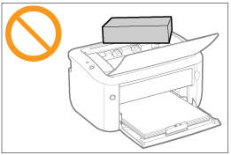
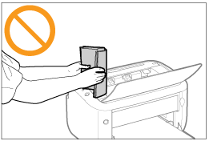

Précautions à prendre pour la manipulation de l'imprimante
Cette imprimante comporte divers éléments électroniques et composants d'optique de précision. Lisez attentivement la section suivante afin de manipuler correctement l'imprimante.
Ne placez aucun objet autre que du papier sur l'imprimante, dans les bacs ou sur les couvercles. Vous risquez d'endommager l'imprimante.

Evitez de secouer l'imprimante. Cela peut nuire à la qualité de l'impression ou endommager l'imprimante.

Ne laissez pas le couvercle supérieur ouvert plus longtemps que nécessaire. L'exposition de l'imprimante à la lumière directe du soleil ou à une forte luminosité peut affecter la qualité d'impression.
N'ouvrez pas le couvercle supérieur pendant l'impression. Vous risquez d'endommager l'imprimante.
Manipulez le tiroir ou le couvercle délicatement lorsque vous l'ouvrez ou le fermez. Sinon, vous risquez d'endommager l'imprimante.
Si vous souhaitez recouvrir l'imprimante pour éviter la poussière, pensez à l'éteindre et à attendre qu'elle soit suffisamment refroidie avant de la recouvrir.
Si vous prévoyez de ne pas utiliser l'imprimante pendant une longue période, débranchez la fiche d'alimentation de la prise secteur.
N'utilisez ni ne stockez jamais l'imprimante dans une pièce où des produits chimiques sont utilisés.